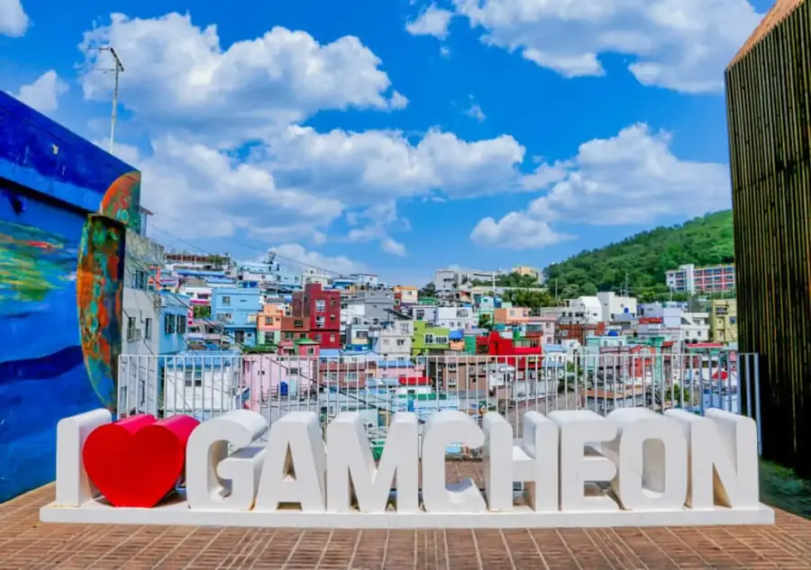

TP.HỒ CHÍ MINH - BUSAN
Ăn sáng: không, Ăn trưa: không, Ăn tối: không
Tối: Quý khách có mặt tại sân bay Tân Sơn Nhất ga đi quốc tế. Trưởng Đoàn hướng dẫn làm thủ tục check in đáp chuyến đi Hàn Quốc ( Nghỉ đêm trên máy bay )

Chương trình 6 Ngày 5 Đêm. Thứ tự điểm tham quan có thể thay đổi tuỳ tình hình thực tế nhưng vẫn đảm bảo đủ nội dung.
Ăn sáng: không, Ăn trưa: không, Ăn tối: không
Tối: Quý khách có mặt tại sân bay Tân Sơn Nhất ga đi quốc tế. Trưởng Đoàn hướng dẫn làm thủ tục check in đáp chuyến đi Hàn Quốc ( Nghỉ đêm trên máy bay )
Ăn sáng: có, Ăn trưa: có, Ăn tối: có
Sáng: Xe và HDV đón khách tại sân bay Busan, dùng bữa sáng sau đó di chuyển tham quan
Trưa: Dùng bữa trưa tại nhà hàng. Sau đó di chuyển về Gyeongju, tham quan:
Tối: Dùng bữa tối tại nha hàng. Về khách sạn nhận phòng, nghỉ ngơi.
Ăn sáng: có, Ăn trưa: có, Ăn tối: có
Sáng: dùng bữa sáng tại khách sạn, trả phòng khách sạn. Khởi hành tham quan:
Trưa: Đoàn dung bữa trưa tại nhà hang.Sau đó tham quan:
Tối: Dùng bữa tối tại nhà hàng, về lại khách sạn nghỉ ngơi tại Ulsan.
Ăn sáng: có, Ăn trưa: có, Ăn tối: có
Sáng: Làm thủ tục trả phòng, khởi hành ra nhà ga KTX, đón tàu về lại Seoul. Qúy khách dùng buổi sáng và nghỉ ngơi trên tàu.
Về Seoul quý khách tham quan mua sắm
Dùng bữa trưa với món cá nướng. Tiếp tục tham quan:
Tối: Quý khách dùng buổi tối tại nhà hàng địa phương sau đó nhận phòng nghỉ ngơi tự do về đêm
Ăn sáng: có, Ăn trưa: có, Ăn tối: có
Sáng: Quý khách dùng bữa sáng tại khách sạn . Sau đó khởi hành đi tham quan mua sắm tại quốc bảo thứ 2 của Hàn Quốc
Dùng bữa trưa tại nhà hàng địa phương. Đoàn di chuyển đi tham quan:
Dùng bữa tối với món gà nướng. Về lại khách sạn, nghỉ ngơi.
Ăn sáng: có, Ăn trưa: không, Ăn tối: không
Sáng: Quý khách dùng bữa sáng tại khách sạn, làm thủ tục trả phòng.
Trưa : Qúy khách dùng cơm trưa tại nhà hàng địa phương
Qúy khách ra sân bay làm thủ tục về lại Việt Nam. Về đến sân bay Tân Sơn Nhất đoàn làm thủ tục nhập cảnh Việt Nam và nhận lại hành lý cá nhân. Kết thúc chương trình, chia tay và hẹn gặp lại.
Chia tay Quý khách. Hẹn gặp lại quý khách!
Lưu ý: Các điểm tham quan trong chương trình sẽ linh động sao cho phù hợp với tình hình thực tế
Giờ bay dự kiến, có thể thay đổi theo lịch của hãng.
THÔNG TIN CHUYẾN BAY |
| VJ868 SGN-PUS 00h50-06h55 VJ861 ICN-SGN 20h50- 00h15 |
Chi tiết những khoản đã nằm trong giá trọn gói và những khoản tính riêng.
GIÁ TOUR |
|
GIÁ TOUR |
|
QUY ĐỊNH VÉ TRẺ EM |
|
QUY ĐỊNH MUA TOUR VÀ THANH TOÁN |
Trường hợp quý khách bị từ chối không cấp visa:
|
ĐIỀU KIỆN HỦY TOUR | |
| |
LƯU Ý | |
*** Công ty được miễn trừ trách nhiệm trong quá trình thực hiện tour nếu xảy ra các trường hợp bất khả kháng do thời tiết, thiên tai, dịch bệnh, đình công, bạo động, chiến tranh hoặc do máy bay, xe lửa, tàu thủy, xe điện bị trì hoãn hay bị hủy do thời tiết hoặc do kỹ thuật… dẫn đến tour không thể thực hiện tiếp được, Công ty không chịu trách nhiệm bồi thường thêm bất kỳ chi phí nào khác. | |
HỒ SƠ XIN VISA HÀN QUỐC
TẤT CẢ CÁC GIẤY TỜ PHOTO TRÊN GIẤY A4 VÀ ĐỀU PHẢI CÔNG CHỨNG (SAO Y)
Để tạo điều kiện cho việc xét duyệt visa được nhanh chóng, Quý khách vui lòng chuẩn bị & hoàn tất hồ sơ theo hướng dẫn sau đây:
|
| |
| Khách hàng là chủ doanh nghiệp | Khách hàng là nhân viên |
|
| |
Khách là người về hưu | Quyết định hưu trí có nhận lương, Thẻ hưu trí, BHXH (bản sao công chứng mới nhất) | |
Học sinh/ Sinh Viên | -Học sinh : thông tin trường học -Sinh viên : thẻ sinh viên, xác nhận sinh viên | |
|
| |
|
| |
LƯU Ý | ||
| ||
ĐỐI VỚI NGƯỜI NƯỚC NGOÀI, VIỆT KIỀU, NGƯỜI GIÀ & TRẺ EM | ||
Phụ nữ mang thai (không quá 30 tuần) khi đăng ký tour, phải xuất trình sổ khám sức khỏe định kỳ và đảm bảo đủ sức khỏe tham gia tour với công ty khi đăng ký và có giấy đảm bảo đủ điều kiện bay khi tính từ ngày khởi hành đến kết thúc tour. Bất cứ sự cố nào xảy ra trên tour, Công Ty sẽ không chịu trách nhiệm. | ||
Chúc quý khách một chuyến đi thú vị và bổ ích!
HỒ SƠ XIN VISA HÀN QUỐC
TẤT CẢ CÁC GIẤY TỜ PHOTO TRÊN GIẤY A4 VÀ ĐỀU PHẢI CÔNG CHỨNG (SAO Y)
Để tạo điều kiện cho việc xét duyệt visa được nhanh chóng, Quý khách vui lòng chuẩn bị & hoàn tất hồ sơ theo hướng dẫn sau đây:
|
| |
| Khách hàng là chủ doanh nghiệp | Khách hàng là nhân viên |
|
| |
Khách là người về hưu | Quyết định hưu trí có nhận lương, Thẻ hưu trí, BHXH (bản sao công chứng mới nhất) | |
Học sinh/ Sinh Viên | -Học sinh : thông tin trường học -Sinh viên : thẻ sinh viên, xác nhận sinh viên | |
|
| |
|
| |
LƯU Ý | ||
| ||
ĐỐI VỚI NGƯỜI NƯỚC NGOÀI, VIỆT KIỀU, NGƯỜI GIÀ & TRẺ EM | ||
| ||
Chúc quý khách một chuyến đi thú vị và bổ ích!
Your Perfect Services
Chuyên viên Triều Hảo An Đông sẽ liên hệ trong 15 phút giờ hành chính.